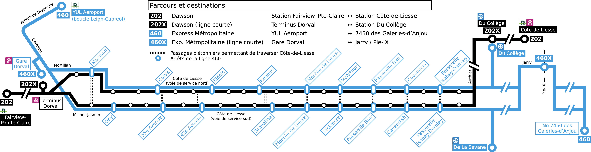
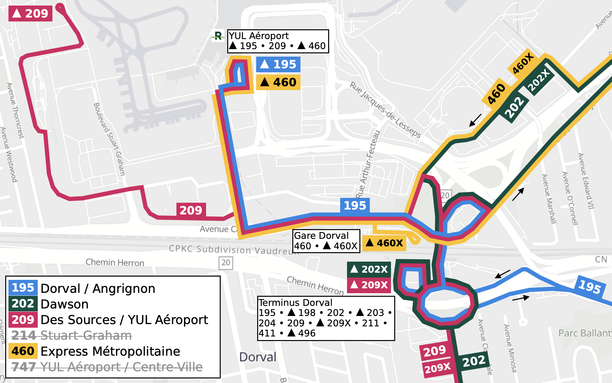
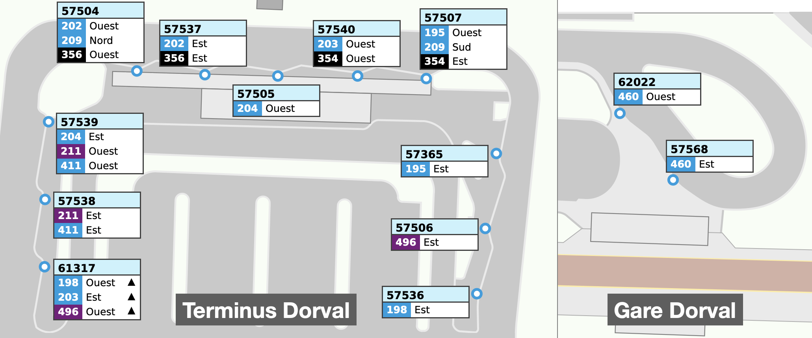

Portrait du secteur
Résumé des interventions proposées
Globalement, trois interventions distinctes devront avoir lieu: une révision des lignes circulant sur Côte-de-Liesse (lignes 100, 202 et 460); une révision des lignes circulant aux alentours de l'aéroport YUL (lignes 202, 204, 209, 214, 460 et 747); et enfin une révision d'assignation de quais au terminus Dorval.
En ce moment, l'offre de service dans les deux directions est asymétrique et atypique. Le matin, la ligne 460 est très fréquente vers l'ouest, et plusieurs départs (X ligne courte) partent de la station Du Collège vers l'aéroport. La ligne 460 fait la majorité des arrêts locaux tout au long de Côte-de-Liesse, mais néanmois saute un petit nombre d'arrêts. La ligne 202, entièrement locale, demeure peu fréquente. Par contre, l'après-midi, les deux lignes roulent à une fréquence similaire, avec plusieurs départs ligne courte 202X en partant du terminus Dorval vers la station Côte-de-Liesse.
Donc, un usager se retrouve à utiliser des lignes différentes matin et soir: 460 ouest et 202 est. Cela non seulement porte confusion aux usagers, mais baisse également la performance de l'express 460 en devant conserver un nombre élevé d'arrêts. Cette situation peut être potentiellement remédiée en créant une ligne 202X dans les deux directions, entre la station Du Collège et le terminus Dorval. En effet, puisque l'achalandage sur les lignes 202 et 460 démontre une utilisation très forte entre la station Du Collège et montée de Liesse, il est intéressant de concentrer le service sur ce segment.
À terme, il est donc prévu d'avoir un service moins fréquent sur la ligne 460, et de le rendre un vrai trajet express sur tout son trajet. Le choix d'arrêts prend l'emplacement des passerelles piétonnières en considération. La ligne 202, conservant sa desserte locale, deviendra fréquente en direction de pointe matin comme soir, sur le tronçon entre la station Du Collège et le terminus Dorval. Le schéma ci-dessous illustre la desserte de ces deux lignes:

Fréquence approximative proposée:
| Ligne | Terminus | Fréquence (dir. ouest / dir. est) | ||||||
|---|---|---|---|---|---|---|---|---|
| Pointe AM | Pointe PM | Hors pointe | ||||||
| 202 Dawson | Station Fairview–Pointe-Claire | Station Côte-de-Liesse | 20-30 | 30 | 30 | 20-30 | 20-30 | 20-30 |
| 202 + 202X Dawson (tronçon commun) | Terminus Dorval | Station Du collège | 15-20 | 15 | 15 | 15-20 | ||
| 460 Express Métropolitaine | YUL Aéroport | 7450 des Galeries-d'Anjou | 30 | 30 | 30 | 30 | – | – |
| 460 + 460X Exp. Métropolitaine (tronçon commun) | Gare Dorval | Jarry / Pie-IX | 8-12 | 10-15 | ||||
La ligne 214 est très courte et ne démontre pas son utilité en raison de son très faible achalandage observé. La ligne occupe également deux quais à la boucle Leigh-Capreol. L'entrée en service du REM, le retrait de la ligne 747 et la reconfiguration de la boucle Leigh-Capreol apportera une opportunité de bonifier la desserte locale vers l'aéroport, soit le secteur Dorval au sud de l'aéroport.
D'abord, je suggère de fusionner les lignes 209 et 214, puisque les deux ont la vocation industrielle. Puisque la fréquence sur la ligne 209, environ 15 minutes en pointe, excède la demande vers Stuart-Graham, quelques départs 209X auront Terminus Dorval comme origine ou destination. Cela permet également de libérer un quai à la boucle Leigh-Capreol, y permettant l'intégration de la ligne 460.
Comme la ligne 747 est appelée à dispraraître, et dans le respect de non-concurrence avec le REM, un service vers Lionel-Groulx n'est plus possible. Il est alors suggérer de prolonger une ligne de proximité vers l'aéroport: pour l'instant, la ligne 195 est suggérée. Il serait également possible de prolonger la ligne 198 au lieu.

L'assignation des quais au terminus Dorval devra être également revue. Depuis le retrait de la ligne 204 à la boucle sud, son quai n'est plus exploitée. Cependant, les lignes 204, 211 et 411 partagent le même quai. Cette utilisation de la boucle n'est pas optimale.
En effet, à partir de ce terminus, trois axes de desserte existent: (1) desserte selon les axes autoroutiers vers un mode lourd (202-E, 211-E, 411-E); (2) desserte vers Dorval industriel et l'aéroport (204-O, 209-S); et (3) desserte vers Dorval résidentiel (195, 198, 202-O, 203, 204-E, 209-N). Les lignes ayant des dessertes similaires pourront être regroupées ensemble. D'ailleurs, j'ai déjà fait parvenir une suggestion à ce sujet. Ceci étant dit, ici j'ajoute quelques légères modifications en lien avec mes propositions ci-dessus sur les parcours:

| Ligne | Type d'intervention | Intervention(s) suggérée(s) [modifications majeures de trajet seulement] | Note(s) |
|---|---|---|---|
| 195 • Dorval / Angrignon | Modification de trajet |
|
|
| 202 • Dawson | Intervention mineure |
|
|
| 204 • Cardinal | Maintien du service |
|
|
| 209 • Des Sources / YUL Aéroport | Modification de trajet |
|
|
| 214 • Stuart-Graham | Retrait du service |
|
|
| 460 • Express Métropolitaine | Modification de trajet |
|
|
| 747 • YUL Aéroport / Centre-Ville | Retrait du service |
|